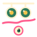
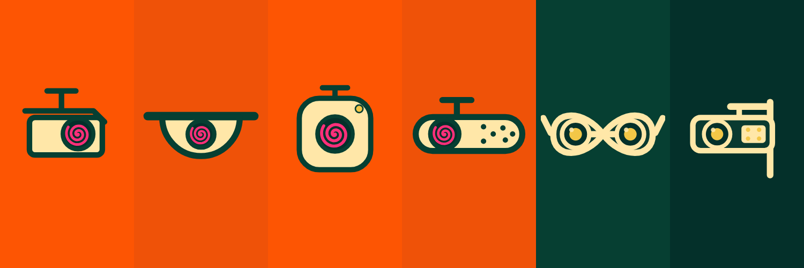

Ghostmaxxing · design system
Specimen
Every part of the system rendered from the real token file. If something
here looks wrong, the system is wrong — not the page. Read brand-manual.md for the rules and
ASSETS.md for the file index — both live in the full design-system export, not in this package.
This copy is the ghostutter build. The spinner/dazzler has
been renamed and rebuilt: section 07 documents it in full, and sections 04 and 06 now
render the new mark. gm-spin.css and gm-dazzle.css are both retired into
styles/ghostutter.css. No React, no build step — the only script on this page is 6kB of vanilla
scripts/ghostutter.js plus the ten lines below it that drive the idle-cursor demo.
Fonts: no CDN — this page links
vendor/newsreader.css and vendor/atkinson.css directly, so it shows the real faces as soon
as the ten .woff2 files are in styles/vendor/. Until then the metric-matched fallbacks
stand in (Georgia for display, Verdana for text): the layout is already correct, the letterforms are not. Open
devtools → Network to confirm nothing leaves your machine.
01
Colour
Max two background colours per surface. Pink is reserved — see below.
Pink text on orange — 1.09:1. Never do this.
Ink on orange — correct.
02
Type scale
Eight tokens. No component may hand-roll a font-size. Resize the window: the four fluid
steps interpolate across the same 400→1440px range.
--t-display
serif 700
Disrupt the read.
--t-h1
serif 700
The genealogy of the read
--t-h2
serif 700
CNN face embeddings
--t-h3
serif italic
Adversarial eyeglass frames — Sharif et al.
--t-lead
sans 400
A real-time lab for face-recognition camouflage. Nothing leaves your browser.
--t-body
sans 400
Dates mark first public demonstration, not deployment. Every era is a documented result under stated conditions.
--t-small
sans 400
Limits: optimised against named models; retraining closes most of the gap.
--t-meta
mono 400
Atkinson has two weights, 400 and 700. Never request 500, 600 or 650 — the browser fakes it.
03
Identity mark


On orange the pink vanishes, so the orange field always
takes mark-mono-cream — the spiral is a knockout, not a stroke.
04
Camera icons & the two lens states
Hover a dazzled lens to shake its ghostutter. One system, top-mounted, 100×100. The mark is visible while still — a dazzled lens is dazzled whether or not you are pointing at it. Motion is the reward for attention, not the state itself. Full documentation of the mark is in section 07.
05
Components
Disrupt the read.
A real-time lab for face-recognition camouflage. Point your camera, change how your face looks, and watch a local pipeline react.
06
Motifs
The band and anything growing out of it must be bottom-anchored to the same containing block, or the plant floats. Field in front of the trunk, cameras in front of the field.
All three layers share one baseline
(bottom: 0 on the same box) and one transform. Hover a dazzled lens. Labels are omitted
here on purpose — at this scale they would be unreadable; the hang points are tabulated in ASSETS.md.
 genealogy-tree · 1200×3100
genealogy-tree · 1200×3100
social header · 1500×50007
Ghostutter
The spinner, and the thing sitting in every dazzled lens — one object with one name.
Ghost + stutter, built the way ghostyle is built out of ghost + style. It replaces the
old gm-spin spiral and the gm-dazzle shudder, which were two files describing the same
mark doing two jobs.
Six irregular wedges radiating from one pivot: dazzle geometry, the hard-edged wedges painted on WWI ships. Irregular on purpose — no even spokes, no clock hands — so it never settles into reading as an interface glyph. It rotates in hard steps, never eased, and every step throws the mark a couple of percent off its own pivot. The centre never holds. That is the difference between a shudder and a turntable, and it is the whole point: this is a machine failing to complete a read, not a machine working.
Scale
One SVG, no size variants. The shudder offsets are percentages of the mark's own box, so motion
scales with --ghostutter-size and never needs re-tuning. Below 20px switch to the
--panic profile: the stutter's long holds just read as broken at that size.
The mark ships as a CSS mask, not an
<img> — which is why the last swatch can be soil-coloured from a custom property alone. On any
orange or green surface it stays --gm-pink: pink is reserved, and a lens is the one place it is
allowed.
Profiles
stutter — uneven dwell, two
long holds and a burst, like a machine retrying. The default, and the only one for a lens.
panic — evenly spaced steps, busier, no dwell; for marks under ~24px.
smooth — continuous rotation. This is the old gm-spin, kept for the footer camera
band and anywhere the mark should read as machinery rather than failure. Speed modifiers combine with any of them.
The four triggers
| Trigger | Written as | Use for |
|---|---|---|
| hover / focus | data-ghostutter="hover" on an ancestor | Lenses in a genealogy row, cards, buttons. The ancestor form makes the whole row the hit area rather than the 27px mark. Give it tabindex="0" or keyboard users never see it. |
| always | .ghostutter--always | Loading states, the footer camera band, anything already in motion. |
| script | Ghostutter.start(el) | Tie the mark to real work — a fetch, a model warming up. Adds .is-ghostuttering. |
| idle cursor | --ghostutter-idle | Ambient. See below. |
Hover, focus and always need no JavaScript at all —
styles/ghostutter.css on its own is enough. scripts/ghostutter.js is only required for the
last two rows.
<!-- as a spinner -->
<span class="ghostutter ghostutter--always"></span>
<!-- over a lens, hover to shake -->
<span class="ghostutter-lens" data-ghostutter="hover" tabindex="0">
<img src="images/icons/cam-dome.svg" width="100" height="100" alt="Dome camera, dazzled">
<span class="ghostutter" style="left:34px; top:28px; --ghostutter-size:32px"></span>
</span>
<!-- tied to real work -->
const mark = Ghostutter.mark({ size: '32px' });
button.append(mark);
Ghostutter.start(mark);
await fetch(url);
Ghostutter.stop(mark);The idle-cursor directive
Optional, and off by default. When the pointer holds still for longer than a stated interval, a ghostutter is left behind where it stopped; the next movement takes it away again. You stopped moving, so the read had time to land — the mark is what got left in the frame.
The switch is CSS, not JavaScript config. The runtime
reads one custom property off :root and binds no listeners at all unless it holds a positive time.
Anything else — off, 0, an empty value, a typo — reads as disabled, which is what makes
it a real switch rather than a hint. It is ignored on coarse pointers, because there is no resting cursor on a
touchscreen, and under prefers-reduced-motion.
:root { --ghostutter-idle: 2s; } /* on, after two seconds */
:root { --ghostutter-idle: 900ms; } /* on, brisker */
:root { --ghostutter-idle: off; } /* off — the default */Try it on this page: the button writes the property on
<html> and calls Ghostutter.idle.refresh(). Then stop moving the mouse.
Tokens
| Property | Default | Notes |
|---|---|---|
| --ghostutter-colour | var(--gm-pink) | Reserved. Inside a lens only, or as the logo spiral. |
| --ghostutter-size | 2.75rem | Set per instance. Motion scales with it. |
| --ghostutter-duration | 2.2s | One full revolution, holds included. |
| --ghostutter-idle | off | The directive above. A CSS time turns it on. |
| --ghostutter-idle-size | 3.25rem | The cursor mark only. |
| --ghostutter-idle-colour | var(--gm-ink) | Deliberately not pink. The cursor mark floats over whatever the page happens to be, and pink on --gm-bg is 1.09:1. Set it to var(--gm-cream) on a soil or green page. |
| --ghostutter-idle-fade | 260ms | Opacity only — the mark never fades its motion. |
Set any of these on :root, or on any ancestor to scope them to
one region. Nothing else in the file needs editing.
Migrating from gm-spin / gm-dazzle
| Old | New |
|---|---|
| .gm-spin | .ghostutter .ghostutter--smooth |
| .gm-spin--slow | .ghostutter--slow |
| .gm-spin--always | .ghostutter--always |
| .gm-dazzle | .ghostutter |
| .gm-dazzle--always | .ghostutter--always |
| [data-spin-on-hover] | data-ghostutter="hover" |
| dazzle-spiral.svg | images/ghostutter/shard.svg · kept as legacy-spiral.svg |
The old class names still work.
ghostutter.css ends with an alias block so existing markup keeps running while you migrate — delete
that block once nothing references it. The logo spiral is not affected: that is the identity mark, and it
stays a spiral.